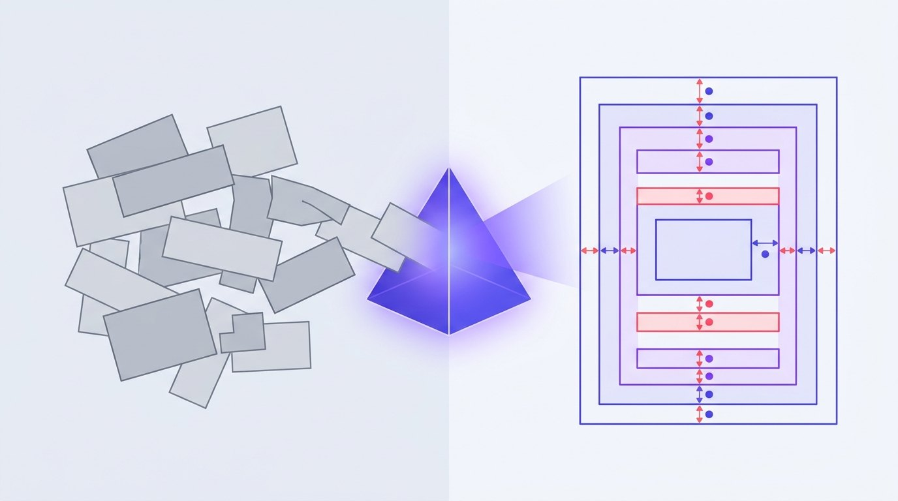

Turn Figma frames, design tokens, and component libraries into production React and Tailwind code using Figma Make, the official Figma MCP server, Code Connect v2, and AI coding agents.
get_design_context instead of lossy PNG guesses.Pasting a Figma screenshot into an AI chat forces the model to guess spacing, hex values, and component boundaries. The modern 2026 design-to-code stack replaces visual guesswork with a deterministic protocol: Figma Variables define tokens, Code Connect maps components, and the official Figma MCP server streams structured specs straight into your coding agent.
Reliable production UI does not come from a single prompt. High-velocity product teams run a closed four-stage loop where Figma supplies structure and tokens, your repo supplies real components, and the coding agent verifies its own rendered output before opening a pull request:
Figma's late-2026 ecosystem spans four distinct design-to-code surfaces. Picking the wrong one wastes AI credits or produces throwaway code. Use the matrix below to match each tool to the exact stage of your product lifecycle.
| Surface | Primary Job | Best Used When | Output Artifact | Key Limit (2026) |
|---|---|---|---|---|
| Figma Make | Prompt-to-interactive prototype & mini web app inside Figma | Validating UX flows, stakeholder demos, micro-interactions, 0→1 ideas | Live interactive React/Tailwind preview in Figma | Seat-level AI credits; sandboxed from prod repo |
| Figma MCP Server | Streams frame geometry, tokens, screenshots & mappings to agents | Building production screens directly inside your actual codebase | Structured MCP context consumed by coding agents | Read rate limits tied to Figma seat tier |
| Code Connect v2 | Maps Figma component sets to real repo imports, props & docs | You maintain a reusable UI library (shadcn/ui, Radix, internal DS) | Template mappings (*.figma.ts) or UI links |
Org/Ent plan for CLI & full DS scale |
| Dev Mode | Human inspection, version diffing, annotations & local MCP toggle | Reviewing spacing/redlines, comparing frame diffs, pairing live | Inspect CSS/Tailwind, Ready-for-Dev status | Requires Dev or Full seat for full inspect |
| Plan & Seat | Approx. Cost | Figma Make Credits | Official MCP Server Limits | Code Connect |
|---|---|---|---|---|
| Starter (Free) | $0 / mo | 150 AI credits/day (Community publish only) | Capped (~20 read calls/mo on free/View seats) | UI preview only |
| Professional Full / Dev Seat |
$16 Full $12–$15 Dev |
Monthly seat credit pool + add-on packs | Standard per-minute API/MCP tier for daily dev | Code Connect UI + basic CLI |
| Organization Full / Dev / Collab |
$55 Full / $25 Dev / $5 Collab (annual) | Higher monthly pool + $0.03/credit PAYG | High per-minute tier; remote write tools (beta) | Full CLI + GitHub UI + DS analytics |
| Enterprise Full / Dev / Collab |
$90 Full / $35 Dev / $5 Collab (annual) | Enterprise credit pools + custom governance | Highest rate limits + SSO/SCIM + audit controls | Multi-library CLI + CI publishing |
npx figma connect publish in CI, enforce Variables-only tokens, and gate PRs with visual regression.https://mcp.figma.com/mcp).whoami or #get_design_context.use_figma, generate_figma_design) are free during beta. However, read-tool ceilings strictly follow your Figma seat—putting an engineer on a free View seat will stall MCP mid-sprint.
When design-to-code works seamlessly, three panes stay in sync: the Figma Dev Mode canvas (left), the Inspect & MCP Status panel (center), and your AI Coding Agent (right). Master these seven controls to eliminate manual copy-pasting.
get_screenshot → compared against Playwright render at 1280px & 390px. Spacing delta < 2px. Ready for PR.
Shift + D)Switches Figma from authoring to inspection. Exposes Ready-for-Dev statuses, version diffs, and the Desktop MCP server toggle in the right sidebar.
Named containers (HeaderRow, PlanGrid) become clean semantic JSX. Generic Frame 481 groups cause the agent to emit nested unnamed <div> wrappers.
Cmd/Ctrl + L)Copies the exact ?node-id=412-88 URL. Paste this into Claude Code, Cursor, or Codex when using the Remote MCP server to scope extraction to one frame.
Confirms whether your agent is hitting Hosted Remote (mcp.figma.com/mcp) or Local Desktop (127.0.0.1:3845/mcp). Avoid running both under the same alias.
Displays live CSS variable bindings and published Code Connect snippets. If this panel shows raw hex values, fix variables before invoking your coding agent.
Watch the agent call get_metadata first on large pages, then get_design_context and get_variable_defs on targeted sub-frames to conserve context tokens.
get_screenshot + Headless Browser)get_screenshot and visually compare Figma's render against your local dev server via Playwright or Storybook. Catching a misaligned flex wrap or missing focus ring here takes 15 seconds instead of a 2-day design review cycle.
Figma Make turns natural-language prompts and existing Figma frames into functional, clickable React + Tailwind prototypes directly inside Figma. Used correctly, it replaces weeks of static noodle-wiring; used carelessly, it burns seat credits on unshippable sandboxes.
Plan Mode to lock interaction states first, then iterate visually before graduating specs via Figma MCP.
empty, loading skeleton, error toast, and overflow-text toggles in a top debug bar.1280px) and mobile drawer (390px) behaviors in the first prompt.| Phase | Where You Work | Exact Action to Avoid Throwaway Code |
|---|---|---|
| 1. Explore | Figma Make (Plan Mode) | Test 2–3 interaction models with PMs and customers using live clickable prototypes; discard weak flows in minutes. |
| 2. Canonize | Figma Design + Variables | Lock the winning flow into clean Auto-Layout frames bound to your team's Variables and library components. |
| 3. Ship | Figma MCP → Coding Agent | Do not copy-paste raw Make sandbox code into prod. Point Claude Code/Cursor at the canonical Figma URL + Code Connect so it writes repo-native TypeScript. |
Figma's official MCP server exposes ~25+ structured tools (18 read + write beta tools) to AI coding clients. Understanding Remote vs. Desktop transport and structuring a 5-part Design-to-Code prompt is what separates crisp PRs from generic CSS.
| Dimension | Remote MCP Server (Recommended) | Desktop MCP Server (Local) |
|---|---|---|
| Endpoint URL | https://mcp.figma.com/mcp (Streamable HTTP) |
http://127.0.0.1:3845/mcp (Localhost HTTP) |
| Auth & Setup | Browser OAuth via Figma plugin/client; no desktop app needed | Enable in Figma Desktop → Dev Mode → MCP server panel |
| Selection Mode | Paste a Figma frame/node URL in your prompt | Reads your currently selected frame live on canvas |
| Write Tools | Supports use_figma, generate_figma_design, html_to_figma |
Read-focused (canvas write tools are Remote-only) |
| Best For | Teams, cloud agents, CI workflows, Linux/remote VMs | Live designer-developer pairing on macOS/Windows |
# Claude Code (installs MCP + official Figma skills)
claude plugin install figma@claude-plugins-official
# Or add Remote MCP directly (user scope)
claude mcp add --scope user --transport http \
figma https://mcp.figma.com/mcp
# OpenAI Codex CLI
codex mcp add figma --url https://mcp.figma.com/mcpmcp.json){
"mcpServers": {
"figma": {
"type": "http",
"url": "https://mcp.figma.com/mcp"
},
"figma-desktop": {
"url": "http://127.0.0.1:3845/mcp"
}
}
}get_metadata (cheap XML tree overview for huge files) → get_design_context (layout + React/Tailwind spec) → get_variable_defs (exact token definitions) → get_code_connect_map (real repo imports) → get_screenshot (visual ground truth) → create_design_system_rules (bootstraps CLAUDE.md / .cursor/rules).
Without token alignment and Code Connect, Figma MCP emits raw Tailwind classes and custom <button> markup. Binding Figma Variables to CSS custom properties and publishing Code Connect v2 templates forces every coding agent to speak your exact design system.
Structure Figma Variables into Primitives (indigo-600, space-4) and Semantic Tokens (surface/elevated, text/muted) with Light/Dark modes. Export to CSS so MCP maps names 1:1:
/* src/styles/tokens.css (Tailwind v4 @theme) */
@import "tailwindcss";
@theme {
--color-surface-elevated: var(--ds-surface-elevated);
--color-brand-primary: var(--ds-brand-primary);
--color-border-subtle: var(--ds-border-subtle);
--radius-card: 0.75rem; /* 12px */
--spacing-card-pad: 1.25rem; /* 20px */
}
:root { --ds-surface-elevated: #ffffff; --ds-brand-primary: #4f46e5; }
.dark { --ds-surface-elevated: #141526; --ds-brand-primary: #818cf8; }Run Figma's token audit before handoff. When every fill, stroke, radius, and gap is bound to a semantic Variable, get_variable_defs gives your agent exact token names instead of bg-[#4F46E5].
In August 2026, @figma/code-connect@2.x deprecated legacy framework-specific parsers. New repos use universal template files (*.figma.ts) or Code Connect UI inside Figma:
// src/components/ui/Button.figma.ts (Code Connect v2)
import figma from "@figma/code-connect";
figma.connect(
"https://figma.com/design/DS123/Kit?node-id=12-40",
{
props: {
variant: figma.enum("Variant", {
Primary: "primary",
Ghost: "ghost",
Danger: "destructive",
}),
size: figma.enum("Size", { SM: "sm", MD: "md", LG: "lg" }),
label: figma.string("Label"),
},
example: ({ variant, size, label }) =>
`import { Button } from "@/components/ui/button";\n` +
`<Button variant="${variant}" size="${size}">${label}</Button>`,
}
);# Interactive AI-assisted wizard & CI publish
npx figma connect # fuzzy-matches repo components
npx figma connect preview # inspect rendered snippets locally
npx figma connect publish # push mappings to Dev Mode & MCP| Method | How It Works | Best For | AI Agent Benefit |
|---|---|---|---|
| Code Connect UI | Link Figma components to GitHub repo paths directly in Figma's Inspect panel | Fast onboarding, designers adding AI usage notes without touching CLI | Exposes file paths & custom AI instructions to MCP immediately |
| Code Connect CLI v2 | Versioned *.figma.ts template files published via GitHub Actions on merge |
Mature React/Tailwind, iOS, or Android libraries with strict prop contracts | Exact variant-to-prop rendering + zero drift on CI publish |
Button, Input, Select, Card, Dialog, Badge, Tabs, and Table eliminates ~80% of duplicated component code across product PRs.
Garbage in, position: absolute out. Figma MCP translates your literal node geometry into layout code. A five-minute Auto-Layout and layer-naming pass before handoff cuts agent cleanup time by 70%.

flex, grid, and gap-*.
Convert every Group into an Auto-Layout Frame (Shift + A). Use Horizontal/Vertical/Grid flows and explicit Gap values instead of manually nudged coordinates.
Set fluid containers to Fill container (w-full flex-1), badges/buttons to Hug contents (w-fit), and only icons or sidebars to Fixed pixel widths.
Name key containers by role: NavHeader, MetricCard, ActionBar. Agents use layer names to generate React component names, ARIA labels, and test IDs.
Never leave multi-path vector icons ungrouped. Wrap each icon in a named component (Icon/ArrowRight) so MCP maps it to lucide-react instead of dumping 200 lines of inline SVG.
Passing an entire 14-section marketing page in one MCP call bloats context and degrades accuracy. Break work into section-level frames (Hero, PricingTable, Footer) and assemble sequentially.
Hidden layers (opacity: 0 or toggled off) still appear in node metadata and confuse agents. Keep exploratory iterations on a separate Scratch page away from Ready for Dev.
<div className="relative w-[412px] h-[184px]"><div className="absolute top-[23px] left-[19px] text-[#334155]">...<Card className="flex flex-col gap-4 p-5 bg-surface-elevated border-border-subtle"><CardHeader>...
Bookmark these five repeatable workflows. Each recipe pairs specific Figma MCP tool calls with repo constraints so Claude Code, Cursor, Codex, or Antigravity delivers reviewable diffs on the first pass.
| Recipe | MCP Tools Triggered | Core Goal | Target Output |
|---|---|---|---|
| 1. Feature Screen Build | get_metadata, get_design_context, get_code_connect_map |
Implement a new multi-section view using existing UI primitives | Typed React page + Storybook story |
| 2. Token Sync PR | get_variable_defs |
Sync updated Figma brand colors/radii into Tailwind v4 @theme |
tokens.css diff + dark mode parity |
| 3. Code-to-Canvas | use_figma / html_to_figma (Remote) |
Push a refined coded UI back into Figma as editable frames | Synced Figma design frame |
| 4. Responsive Refactor | get_design_context (Desktop + Mobile URLs) |
Reconcile desktop table & mobile card-list breakpoints cleanly | Single responsive component |
| 5. DS Rules Bootstrap | create_design_system_rules |
Generate repo-wide agent rules from your Figma component kit | CLAUDE.md / .cursor/rules/figma.mdc |
Build the AnalyticsHeader from:
https://figma.com/design/KEY/App?node-id=804-12
1. Call get_design_context + get_variable_defs.
2. Call get_code_connect_map and reuse components
from @/components/ui (do not recreate primitives).
3. Use Tailwind v4 tokens from src/styles/tokens.css.
4. Add unit test + call get_screenshot to verify
visual parity against localhost:3000.Run get_variable_defs on node-id=1-2 (Tokens page).
Diff against src/styles/tokens.css.
Update changed Light & Dark CSS custom properties,
preserve all Tailwind @theme aliases, and list any
removed tokens still referenced in src/.Take the updated PricingTable in
src/components/PricingTable.tsx (with the new
Annual toggle we shipped in PR #418).
Use the remote Figma MCP write tools (use_figma /
html_to_figma) to create an editable frame in
page "Synced From Prod" using our existing
Variables and Auto-Layout conventions..cursor/rules/figma-ds.mdc)---
description: Rules for all Figma MCP UI tasks
globs: ["src/components/**/*.tsx", "src/app/**/*.tsx"]
---
- Always call get_variable_defs before writing CSS.
- Never emit raw hex (#xxxxxx) or arbitrary px.
- Prefer @/components/ui primitives over raw HTML.
- Icons must import from lucide-react, never inline.
- Verify output with Playwright vs get_screenshot.claude plugin install figma@claude-plugins-official or /add-plugin figma in Cursor) bundles Figma's maintained skills for use_figma font loading, Auto-Layout ordering, and variable scoping—dramatically cutting write-tool errors.
AI agents can generate five screens in an afternoon—which means they can also introduce five subtly different button paddings and hardcoded hex colors if you lack automated guardrails. Put these four governance controls in place before scaling across teams.
https://mcp.figma.com/mcp) uses browser OAuth tied to your org's SSO/SCIM—auto-revoking access when someone leaves.npx figma connect publish in GitHub Actions, store a dedicated read/Code-Connect-scoped token in encrypted CI secrets, never in .env committed to git.use_figma writes to a dedicated AI-Synced page or branch so agents never overwrite locked master design systems.bg-[#...], p-[13px], or raw inline style={{}} in PRs.npx figma connect publish --dry-run on every design-system PR to catch broken component URLs or renamed props before merge.| Check Category | Automated CI Check | Human Reviewer Verification |
|---|---|---|
| Token Integrity | Lint blocks hardcoded hex colors & non-scale spacing | Confirm Dark Mode & high-contrast themes use semantic tokens |
| Component Reuse | Check imports against @/components/ui allowlist |
Reject duplicate buttons, modals, or custom dropdown wrappers |
| Accessibility | axe-core / Playwright a11y scan in Storybook CI |
Tab through keyboard focus order, Esc-to-close, ARIA live regions |
| Visual Parity | Playwright / Chromatic snapshot diff vs. baseline | Side-by-side spot check against Figma frame + edge-case copy |
| State Coverage | Unit tests for loading, empty, and API error states | Verify optimistic UI, skeleton heights, and long-text truncation |
Figma MCP reaches peak velocity when wired into your broader engineering loop. Here is how high-performing product teams connect design exploration, issue tracking, agentic implementation, and live preview URLs with zero status-meeting friction.
Give your agent one command: "Implement LIN-482." It pulls acceptance criteria from Linear MCP, extracts the embedded Figma URL, fetches tokens via Figma MCP, and scaffolds the branch automatically.
Instead of eyeballing layouts, pair Figma MCP with Playwright MCP. The agent renders the PR locally, screenshots 390px and 1280px, and diffs them against Figma's get_screenshot.
Vercel posts a Preview URL on the PR. Designers test real hover states, keyboard nav, and responsive wrap in a real browser—then sync any final polish back to Figma via use_figma.
Fetch Linear issue LIN-482. Read the linked Figma node via Figma MCP (get_design_context, get_variable_defs, get_code_connect_map). Implement the UI in a new branch using @/components/ui, add Playwright tests at 1280px & 390px, compare against get_screenshot, and open a draft PR with before/after screenshots.When an MCP call returns empty context, hardcoded colors, or missing write tools, the cause is almost always one of these seven misconfigurations. Diagnose in seconds, then run the 6-point pre-flight check before every sprint.
| Symptom | Root Cause | Exact Fix |
|---|---|---|
1. Agent outputs raw hex & p-[17px] |
Figma fills/gaps are unbound or agent skipped get_variable_defs |
Bind fills & spacing to Figma Variables; add "call get_variable_defs first" to CLAUDE.md / .cursor/rules. |
2. Div soup & position: absolute |
Source frame uses loose Groups instead of nested Auto-Layout | Select containers in Figma, apply Shift+A (Auto-Layout), set Fill/Hug constraints, and re-extract. |
| 3. Code Connect ignored by MCP | Mappings unpublished, legacy v1 parser used, or wrong node URL | Upgrade to @figma/code-connect@2.x template files and run npx figma connect publish. |
4. use_figma missing in tool list |
Connected to Desktop MCP instead of Remote MCP, or stale config | Switch endpoint to https://mcp.figma.com/mcp, reinstall official Figma plugin, and re-auth OAuth. |
| 5. Rate limit / 429 error mid-sprint | Engineer is on Starter or View/Collab seat (~20 read calls/mo) | Upgrade engineer to a Dev or Full seat and verify identity via MCP whoami. |
| 6. Context overflow on large page | Whole-page URL passed directly to get_design_context |
Call get_metadata first, then extract one section node-ID at a time (Header, Grid, Modal). |
| 7. Inline 200-line SVGs for icons | Icons are ungrouped vectors rather than named components | Wrap icons in named Figma components (Icon/*) and map to lucide-react in repo rules. |
https://mcp.figma.com/mcp on a Dev/Full seat; whoami succeeds.@theme tokens.CLAUDE.md or .cursor/rules mandates component reuse, icon library imports, and zero raw hex.get_screenshot + Playwright at 1280px/390px and runs axe-core before PR.